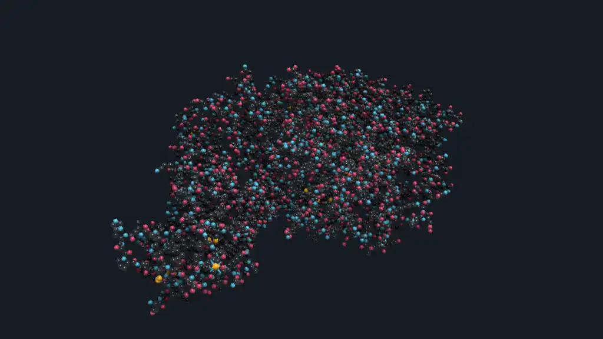

Protein¶
This example renders a prepared PDB structure as colored sphere impostors.
Preview¶

Run And Adapt¶
Commands below assume a Datoviz source checkout and start at the repository root. Use your configured build environment; Python routes additionally require local bindings.
| Route | Availability | Command or action |
|---|---|---|
| C | Canonical native source | just example-c showcases/protein (build and run), or rerun ./build/examples/c/showcases/protein |
| Python | Available | python3 -m examples.python.gallery.showcases.protein |
| Browser | Live WebGPU route | Open live example |
Prepared data required
This example intentionally fails when its prepared input is absent; it does not
substitute synthetic data.
Prepare it from the repository root with python tools/preprocess_protein.py 6M0J.
Real dataset
Check the dataset, license, citation, and preprocessing fields in Example details before redistributing data or derived output.
Use this example as capability or integration evidence, not as a minimal copy-paste template. Start from the nearest supported, copy-safe example and add this feature after verifying the linked API reference.
What To Look For¶
The protein bundle supplies atom positions, element-style colors, and radii; the example scales those radii and renders the atoms as spheres with an arcball/spin view. In the preview, compare atom size and color clusters rather than expecting bonds: the visual focus is the dense molecular surface produced from per-atom arrays.
This workflow is useful when a scientific viewer needs to turn prepared molecular coordinates into an interactive 3D point/sphere representation. The canonical prepared bundle is 6M0J.
Data: RCSB PDB structure data. The canonical cache and repository bundle target is 6M0J.
Source: https://files.rcsb.org/download/{PDB_ID}.pdb
Terms: RCSB PDB data usage policy applies.
Prepare: python tools/preprocess_protein.py 6M0J
Options: [runner options], [frame-count]
Debug: DVZ_EXAMPLE_DEBUG=gui enables post-processing diagnostics
The full interactive GUI workbench lives in examples/c/lab/protein_viewer.c.
Source¶
#!/usr/bin/env python3
"""Prepared PDB atom arrays rendered as lit sphere impostors."""
from __future__ import annotations
import ctypes
import math
from dataclasses import dataclass
from pathlib import Path
import numpy as np
import datoviz as dvz
from examples.python.gallery import common as ex
DEFAULT_PDB_ID = "6m0j"
DEFAULT_BUNDLE = Path("data/examples/proteins/1ubq/prepared")
ATOM_SCALE = 0.4
ROTATION_SPEED_RAD_PER_SEC = 0.18
INITIAL_ANGLES = (ctypes.c_float * 3)(0.790430, -0.651732, 0.810104)
PANEL_BG = dvz.DvzColor(22, 27, 34, 255)
GRID = dvz.DvzColor(48, 54, 61, 160)
TEXT = dvz.DvzColor(201, 209, 217, 255)
CYAN = dvz.DvzColor(76, 201, 240, 255)
GREEN = dvz.DvzColor(128, 255, 219, 255)
AMBER = dvz.DvzColor(255, 183, 3, 255)
ERROR = dvz.DvzColor(239, 71, 111, 255)
@dataclass
class ProteinAtoms:
path: Path
positions: np.ndarray
radii: np.ndarray
colors: np.ndarray
@property
def count(self) -> int:
return int(self.radii.shape[0])
class ProteinState:
def __init__(self, atoms: ProteinAtoms) -> None:
self.atoms = atoms
self.scaled_radii = np.ascontiguousarray(atoms.radii * ATOM_SCALE, dtype=np.float32)
self.rotation_tracks = []
self.animations = []
def destroy_tracks(self) -> None:
for track in self.rotation_tracks:
if track:
dvz.dvz_track_destroy(track)
self.rotation_tracks.clear()
self.animations.clear()
def _cache_bundle_path(pdb_id: str) -> Path | None:
try:
home = Path.home()
except RuntimeError:
return None
return home / ".cache" / "datoviz" / "proteins" / pdb_id.lower()
def _bundle_valid(path: Path) -> bool:
position = path / "atom_position.f32"
radius = path / "atom_radius_vdw.f32"
color = path / "atom_color_element.rgba8"
if not (position.is_file() and radius.is_file() and color.is_file()):
return False
position_size = position.stat().st_size
radius_size = radius.stat().st_size
color_size = color.stat().st_size
if position_size == 0 or position_size % (3 * np.dtype(np.float32).itemsize) != 0:
return False
count = position_size // (3 * np.dtype(np.float32).itemsize)
return (
radius_size == count * np.dtype(np.float32).itemsize
and color_size == count * 4 * np.dtype(np.uint8).itemsize
)
def _default_bundle_path() -> Path:
cache = _cache_bundle_path(DEFAULT_PDB_ID)
if cache is not None and _bundle_valid(cache):
return cache
if _bundle_valid(DEFAULT_BUNDLE):
return DEFAULT_BUNDLE
raise RuntimeError(
f"failed to load protein bundle at '{DEFAULT_BUNDLE}'\n"
"prepare one with:\n"
" python tools/data/prepare_protein_arcball.py 1UBQ --regenerate"
)
def _showcase_atom_colors(element_colors: np.ndarray) -> np.ndarray:
colors = np.empty_like(element_colors)
for i, rgba in enumerate(element_colors):
r, g, b = (int(v) for v in rgba[:3])
if r > 210 and g > 210 and b > 210:
color = TEXT
elif r > 180 and g < 130 and b < 130:
color = ERROR
elif b > r + 30 and b > g + 10:
color = CYAN
elif g > r + 20 and g > b + 10:
color = GREEN
elif r > 170 and g > 120 and b < 120:
color = AMBER
else:
color = GRID
colors[i] = (color.r, color.g, color.b, 255)
return np.ascontiguousarray(colors, dtype=np.uint8)
def _load_atoms(path: Path | None = None) -> ProteinAtoms:
path = _default_bundle_path() if path is None else path
if not _bundle_valid(path):
raise RuntimeError(f"failed to load protein bundle at '{path}'")
positions = np.fromfile(path / "atom_position.f32", dtype=np.float32).reshape((-1, 3))
radii = np.fromfile(path / "atom_radius_vdw.f32", dtype=np.float32)
element_colors = np.fromfile(path / "atom_color_element.rgba8", dtype=np.uint8).reshape((-1, 4))
if not (positions.shape[0] == radii.shape[0] == element_colors.shape[0]):
raise RuntimeError("protein: inconsistent atom array lengths")
return ProteinAtoms(
path=path,
positions=np.ascontiguousarray(positions, dtype=np.float32),
radii=np.ascontiguousarray(radii, dtype=np.float32),
colors=_showcase_atom_colors(element_colors),
)
def _selected_atom(atoms: ProteinAtoms) -> int:
score = (
atoms.positions[:, 0]
+ 0.42 * atoms.positions[:, 2]
- 0.10 * np.abs(atoms.positions[:, 1])
+ 0.12 * atoms.radii
)
return int(np.argmax(score))
def _setup_camera(panel) -> None:
camera = dvz.dvz_camera_desc()
camera.view.eye[:] = (0.18, -0.08, 2.95)
camera.view.target[:] = (0.0, 0.0, 0.0)
camera.view.up[:] = (0.0, 1.0, 0.0)
camera.projection.fov_y = 0.57
camera.projection.near_clip = 0.05
camera.projection.far_clip = 100.0
if dvz.dvz_panel_set_camera_desc(panel, ctypes.byref(camera)) != 0:
raise RuntimeError("dvz_panel_set_camera_desc() failed")
def _set_ssao(panel) -> None:
desc = dvz.dvz_ssao_desc()
desc.radius = 0.72
desc.strength = 1.82
desc.bias = 0.007
desc.power = 2.45
desc.min_visibility = 0.42
desc.sample_count = 16
desc.blur_enabled = True
desc.blur_radius = 5.0
desc.blur_depth_sigma = 0.65
desc.blur_normal_sigma = 0.35
if dvz.dvz_panel_set_ssao(panel, ctypes.byref(desc)) != 0:
raise RuntimeError("dvz_panel_set_ssao() failed")
def _material():
material = dvz.dvz_material_desc()
material.model = dvz.DVZ_MATERIAL_MODEL_STANDARD
material.light_direction[:] = (0.25, 0.65, 0.72)
material.standard.roughness = 0.36
material.standard.specular = 0.68
material.standard.rim_strength = 0.12
return material
def _add_spheres(scene, panel, state: ProteinState, material):
spheres = dvz.dvz_sphere(scene, dvz.DVZ_SPHERE_FLAGS_LIGHTING)
if not spheres:
raise RuntimeError("dvz_sphere() failed")
if dvz.dvz_sphere_set_mode(spheres, dvz.DVZ_SPHERE_MODE_RAYCAST_IMPOSTOR) != 0:
raise RuntimeError("dvz_sphere_set_mode() failed")
if dvz.dvz_visual_set_material(spheres, ctypes.byref(material)) != 0:
raise RuntimeError("dvz_visual_set_material(spheres) failed")
if dvz.dvz_visual_set_data_many(
spheres,
{
"position": state.atoms.positions,
"color": state.atoms.colors,
"radius": state.scaled_radii,
},
) != 0:
raise RuntimeError("dvz_visual_set_data_many(spheres) failed")
ex.add_visual(panel, spheres)
return spheres
def _selection_arrays(atoms: ProteinAtoms, atom_index: int):
p = atoms.positions[atom_index]
radius = float(atoms.radii[atom_index] * ATOM_SCALE * 1.32)
halo_position = np.ascontiguousarray(p.reshape((1, 3)), dtype=np.float32)
halo_radius = np.array([radius], dtype=np.float32)
halo_color = np.array([[AMBER.r, AMBER.g, AMBER.b, 255]], dtype=np.uint8)
r = radius * 2.15
gap = radius * 1.18
starts = np.array(
[
[p[0] - r, p[1], p[2]],
[p[0] + gap, p[1], p[2]],
[p[0], p[1] - r, p[2]],
[p[0], p[1] + gap, p[2]],
[p[0], p[1], p[2] - r],
[p[0], p[1], p[2] + gap],
],
dtype=np.float32,
)
ends = np.array(
[
[p[0] - gap, p[1], p[2]],
[p[0] + r, p[1], p[2]],
[p[0], p[1] - gap, p[2]],
[p[0], p[1] + r, p[2]],
[p[0], p[1], p[2] - gap],
[p[0], p[1], p[2] + r],
],
dtype=np.float32,
)
colors = np.array(
[
[AMBER.r, AMBER.g, AMBER.b, 245],
[AMBER.r, AMBER.g, AMBER.b, 245],
[CYAN.r, CYAN.g, CYAN.b, 220],
[CYAN.r, CYAN.g, CYAN.b, 220],
[CYAN.r, CYAN.g, CYAN.b, 180],
[CYAN.r, CYAN.g, CYAN.b, 180],
],
dtype=np.uint8,
)
widths = np.array([2.8, 2.8, 2.4, 2.4, 1.8, 1.8], dtype=np.float32)
return halo_position, halo_radius, halo_color, starts, ends, colors, widths
def _add_selection(scene, panel, state: ProteinState, material):
selection = dvz.dvz_sphere(scene, dvz.DVZ_SPHERE_FLAGS_LIGHTING)
crosshair = dvz.dvz_segment(scene, 0)
if not selection or not crosshair:
raise RuntimeError("selection visual creation failed")
if dvz.dvz_sphere_set_mode(selection, dvz.DVZ_SPHERE_MODE_RAYCAST_IMPOSTOR) != 0:
raise RuntimeError("dvz_sphere_set_mode(selection) failed")
if dvz.dvz_visual_set_material(selection, ctypes.byref(material)) != 0:
raise RuntimeError("dvz_visual_set_material(selection) failed")
atom_index = _selected_atom(state.atoms)
halo_position, halo_radius, halo_color, starts, ends, colors, widths = _selection_arrays(
state.atoms, atom_index
)
if dvz.dvz_visual_set_data_many(
selection,
{
"position": halo_position,
"color": halo_color,
"radius": halo_radius,
},
) != 0:
raise RuntimeError("dvz_visual_set_data_many(selection) failed")
if (
dvz.dvz_segment_set_caps(
crosshair, dvz.DVZ_SEGMENT_CAP_ROUND, dvz.DVZ_SEGMENT_CAP_ROUND
)
!= 0
):
raise RuntimeError("dvz_segment_set_caps(crosshair) failed")
if dvz.dvz_visual_set_depth_test(crosshair, False) != 0:
raise RuntimeError("dvz_visual_set_depth_test(crosshair) failed")
if dvz.dvz_visual_set_alpha_mode(crosshair, dvz.DVZ_ALPHA_BLENDED) != 0:
raise RuntimeError("dvz_visual_set_alpha_mode(crosshair) failed")
if dvz.dvz_visual_set_data_many(
crosshair,
{
"position_start": starts,
"position_end": ends,
"color": colors,
"stroke_width_px": widths,
},
) != 0:
raise RuntimeError("dvz_visual_set_data_many(crosshair) failed")
ex.add_visual(panel, selection)
ex.add_visual(panel, crosshair)
return selection, crosshair
def _normalize(v: np.ndarray) -> np.ndarray:
norm = float(np.linalg.norm(v))
if norm <= 0.0 or not math.isfinite(norm):
raise RuntimeError("protein: invalid spin axis")
return v / norm
def _preview_spin_axis() -> np.ndarray:
eye = np.array([0.18, -0.08, 2.95], dtype=np.float32)
target = np.array([0.0, 0.0, 0.0], dtype=np.float32)
up = np.array([0.0, 1.0, 0.0], dtype=np.float32)
forward = _normalize(target - eye)
right = _normalize(np.cross(forward, up))
screen_up = _normalize(np.cross(right, forward))
sx, sy, sz = (math.sin(value) for value in INITIAL_ANGLES)
cx, cy, cz = (math.cos(value) for value in INITIAL_ANGLES)
arcball_cols = np.array(
[
[cy * cz, sx * sy * cz + cx * sz, sx * sz - cx * sy * cz],
[-cy * sz, cx * cz - sx * sy * sz, sx * cz + cx * sy * sz],
[sy, -cy * sx, cx * cy],
],
dtype=np.float32,
)
return _normalize(arcball_cols @ screen_up).astype(np.float32)
def _attach_rotation(scene, visual, state: ProteinState, axis: np.ndarray) -> None:
desc = dvz.dvz_track_rotation_desc()
desc.axis[:] = tuple(float(v) for v in axis)
desc.speed_rad_per_sec = 1.0
track = dvz.dvz_track_rotation(ctypes.byref(desc))
if not track:
raise RuntimeError("dvz_track_rotation() failed")
state.rotation_tracks.append(track)
transform = dvz.dvz_transform_motion_desc()
transform.rotation = track
animation = dvz.dvz_anim_visual_transform(scene, visual, ctypes.byref(transform))
if not animation:
raise RuntimeError("dvz_anim_visual_transform() failed")
state.animations.append(animation)
if dvz.dvz_anim_set_speed(animation, ROTATION_SPEED_RAD_PER_SEC) != 0:
raise RuntimeError("dvz_anim_set_speed() failed")
if dvz.dvz_anim_start(animation, 0.0) != 0:
raise RuntimeError("dvz_anim_start() failed")
def _build_scene(path: Path | None = None):
atoms = _load_atoms(path)
state = ProteinState(atoms)
scene, figure, panel = ex.scene_panel()
dvz.dvz_panel_set_background_color(panel, PANEL_BG)
_setup_camera(panel)
_set_ssao(panel)
material = _material()
spheres = _add_spheres(scene, panel, state, material)
selection, crosshair = _add_selection(scene, panel, state, material)
axis = _preview_spin_axis()
for visual in (spheres, selection, crosshair):
_attach_rotation(scene, visual, state, axis)
return scene, figure, panel, state
def _configure_view(view, scene, panel) -> None:
controller = dvz.dvz_arcball(scene, None)
if not controller:
raise RuntimeError("dvz_arcball() failed")
if dvz.dvz_view_bind_controller(view, panel, controller, dvz.DVZ_DIM_MASK_XYZ) != 0:
raise RuntimeError("dvz_view_bind_controller() failed")
arcball = dvz.dvz_controller_arcball(controller)
if not arcball:
raise RuntimeError("dvz_controller_arcball() failed")
if dvz.dvz_arcball_initial(arcball, INITIAL_ANGLES) != 0:
raise RuntimeError("dvz_arcball_initial() failed")
def _run(scene, figure, panel, state: ProteinState) -> None:
print(f"loaded {state.atoms.count} atoms from {state.atoms.path}")
app = dvz.dvz_app(scene)
if not app:
dvz.dvz_scene_destroy(scene)
state.destroy_tracks()
raise RuntimeError("dvz_app() failed")
try:
view = dvz.dvz_view_window(app, figure, ex.WIDTH, ex.HEIGHT, b"Protein")
if not view:
raise RuntimeError("dvz_view_window() failed")
_configure_view(view, scene, panel)
ex.run_app(app, view)
finally:
dvz.dvz_app_destroy(app)
dvz.dvz_scene_destroy(scene)
state.destroy_tracks()
def main() -> None:
scene, figure, panel, state = _build_scene()
_run(scene, figure, panel, state)
if __name__ == "__main__":
main()
/*
* Copyright (c) 2021 Cyrille Rossant and contributors. All rights reserved.
* Licensed under the MIT license. See LICENSE file in the project root for details.
* SPDX-License-Identifier: MIT
*/
/* protein - This example renders a prepared PDB structure as colored sphere impostors.
*
* What to look for: the protein bundle supplies atom positions, element-style colors, and radii;
* the example scales those radii and renders the atoms as spheres with an arcball/spin view. In the
* preview, compare atom size and color clusters rather than expecting bonds: the visual focus is
* the dense molecular surface produced from per-atom arrays.
*
* This workflow is useful when a scientific viewer needs to turn prepared molecular coordinates
* into an interactive 3D point/sphere representation. The canonical prepared bundle is 6M0J.
*
* Scenario: showcases_protein
* Style: showcase scientific, graphite_cyan, 1280x720 window target
*
* Data: RCSB PDB structure data. The canonical cache and repository bundle target is 6M0J.
* Source: https://files.rcsb.org/download/{PDB_ID}.pdb
* Terms: RCSB PDB data usage policy applies.
* Prepare: python tools/preprocess_protein.py 6M0J
* Build: just example-c showcases/protein
* Run: ./build/examples/c/showcases/protein
* Smoke: ./build/examples/c/showcases/protein 60
* Options: [runner options], [frame-count]
* Debug: DVZ_EXAMPLE_DEBUG=gui enables post-processing diagnostics
*
* The full interactive GUI workbench lives in examples/c/lab/protein_viewer.c.
*/
/*************************************************************************************************/
/* Includes */
/*************************************************************************************************/
#include <ctype.h>
#include <inttypes.h>
#include <math.h>
#include <stdbool.h>
#include <stdint.h>
#include <stdio.h>
#include <stdlib.h>
#include "_alloc.h"
#include "_assertions.h"
#include "_compat.h"
#include "datoviz/fileio.h"
#include "datoviz/scene.h"
#include "example_common.h"
#include "example_style.h"
#include "example_tuner.h"
#include "runner/scenario_runner.h"
/*************************************************************************************************/
/* Constants */
/*************************************************************************************************/
#define WIDTH EXAMPLE_WINDOW_WIDTH
#define HEIGHT EXAMPLE_WINDOW_HEIGHT
#define DEFAULT_PDB_ID "6m0j"
#define DEFAULT_BUNDLE_PATH "data/examples/proteins/6m0j/prepared"
#define LEGACY_FALLBACK_BUNDLE_PATH "data/examples/proteins/1ubq/prepared"
#define ROTATION_SPEED_RAD_PER_SEC 0.18f
#define DEFAULT_ATOM_SCALE 0.4f
#define SCENARIO_FPS 60.0
static const float TAU = 6.28318530718f;
/*************************************************************************************************/
/* Structs */
/*************************************************************************************************/
typedef struct ProteinAtoms
{
char path[1024];
uint32_t count;
float* positions;
float* radii;
DvzColor* colors;
} ProteinAtoms;
typedef struct ProteinBundleLayout
{
char position_path[1200];
char radius_path[1200];
char color_path[1200];
DvzSize position_size;
DvzSize radius_size;
DvzSize color_size;
uint32_t count;
} ProteinBundleLayout;
typedef struct ProteinState
{
ProteinAtoms atoms;
float* scaled_radii;
DvzTrack* sphere_rotation;
DvzTrack* selection_rotation;
DvzTrack* crosshair_rotation;
DvzAnimation* sphere_animation;
DvzAnimation* selection_animation;
DvzAnimation* crosshair_animation;
DvzMaterialDesc sphere_material;
DvzExampleGuiSsaoControls ssao;
ExampleTuner tuner;
} ProteinState;
/*************************************************************************************************/
/* Forward declarations */
/*************************************************************************************************/
DvzScenarioSpec dvz_showcase_protein_scenario(void);
/*************************************************************************************************/
/* Helpers */
/*************************************************************************************************/
/**
* Join a directory and child filename.
*
* @param dir parent directory
* @param name child filename
* @param out output path
* @param out_size output path size
* @return whether the result fits
*/
static bool _join_path(const char* dir, const char* name, char* out, size_t out_size)
{
ANN(dir);
ANN(name);
ANN(out);
int n = dvz_snprintf(out, out_size, "%s/%s", dir, name);
return n > 0 && (size_t)n < out_size;
}
/**
* Return the size of a file.
*
* @param path file path
* @param out_size output size in bytes
* @return whether the size was read
*/
static bool _file_size(const char* path, DvzSize* out_size)
{
ANN(path);
ANN(out_size);
FILE* f = fopen(path, "rb");
if (f == NULL)
return false;
if (fseeko(f, 0, SEEK_END) != 0)
{
fclose(f);
return false;
}
off_t end = ftello(f);
fclose(f);
if (end < 0)
return false;
*out_size = (DvzSize)end;
return true;
}
/**
* Return a typed file buffer after checking its exact byte size.
*
* @param path file path
* @param expected_size expected size in bytes
* @return owned file buffer, or NULL on failure
*/
static void* _read_file_checked(const char* path, DvzSize expected_size)
{
ANN(path);
if (expected_size == 0)
return NULL;
DvzSize size = 0;
void* data = dvz_read_file(path, &size);
if (data == NULL)
return NULL;
if (size != expected_size)
{
dvz_free(data);
return NULL;
}
return data;
}
/**
* Return a cache path for one PDB id.
*
* @param pdb_id PDB identifier
* @param out output path buffer
* @param out_size output path buffer size
* @return whether the path fits
*/
static bool _cache_bundle_path(const char* pdb_id, char* out, size_t out_size)
{
ANN(pdb_id);
ANN(out);
const char* home = getenv("HOME");
if (home == NULL || home[0] == '\0')
return false;
char lower_id[16] = {0};
size_t i = 0;
for (; i < sizeof(lower_id) - 1 && pdb_id[i] != '\0'; ++i)
lower_id[i] = (char)tolower((unsigned char)pdb_id[i]);
lower_id[i] = '\0';
if (lower_id[0] == '\0')
return false;
int n = dvz_snprintf(out, out_size, "%s/.cache/datoviz/proteins/%s", home, lower_id);
return n > 0 && (size_t)n < out_size;
}
/**
* Resolve and validate the required atom files for a bundle.
*
* @param dir prepared protein bundle directory
* @param out resolved bundle layout
* @return whether the bundle has consistent atom arrays
*/
static bool _bundle_layout(const char* dir, ProteinBundleLayout* out)
{
ANN(dir);
ANN(out);
dvz_memset(out, sizeof(ProteinBundleLayout), 0, sizeof(ProteinBundleLayout));
if (!_join_path(dir, "atom_position.f32", out->position_path, sizeof(out->position_path)) ||
!_join_path(dir, "atom_radius_vdw.f32", out->radius_path, sizeof(out->radius_path)) ||
!_join_path(dir, "atom_color_element.rgba8", out->color_path, sizeof(out->color_path)))
{
return false;
}
if (!_file_size(out->position_path, &out->position_size) ||
!_file_size(out->radius_path, &out->radius_size) ||
!_file_size(out->color_path, &out->color_size))
{
return false;
}
if (out->position_size == 0 || out->position_size % (3u * sizeof(float)) != 0)
return false;
const DvzSize count = out->position_size / (3u * sizeof(float));
if (count > UINT32_MAX || out->radius_size != count * sizeof(float) ||
out->color_size != count * sizeof(DvzColor))
{
return false;
}
out->count = (uint32_t)count;
return out->count > 0;
}
/**
* Return the default bundle path.
*
* @param out output path buffer
* @param out_size output path buffer size
* @return whether the path fit
*/
static bool _default_bundle_path(char* out, size_t out_size)
{
ANN(out);
ProteinBundleLayout layout = {0};
if (_cache_bundle_path(DEFAULT_PDB_ID, out, out_size) && _bundle_layout(out, &layout))
return true;
int n = dvz_snprintf(out, out_size, "%s", DEFAULT_BUNDLE_PATH);
if (n > 0 && (size_t)n < out_size && _bundle_layout(out, &layout))
return true;
n = dvz_snprintf(out, out_size, "%s", LEGACY_FALLBACK_BUNDLE_PATH);
return n > 0 && (size_t)n < out_size && _bundle_layout(out, &layout);
}
/**
* Return the strict gallery palette color for one element-style atom color.
*
* @param src source atom color
* @return palette color
*/
static DvzColor _showcase_atom_color(DvzColor src)
{
if (src.r > 210 && src.g > 210 && src.b > 210)
return example_graphite_cyan_color(EXAMPLE_STYLE_COLOR_TEXT);
if (src.r > 180 && src.g < 130 && src.b < 130)
return example_graphite_cyan_color(EXAMPLE_STYLE_COLOR_ERROR);
if (src.b > src.r + 30 && src.b > src.g + 10)
return example_graphite_cyan_color(EXAMPLE_STYLE_COLOR_ACCENT_PRIMARY);
if (src.g > src.r + 20 && src.g > src.b + 10)
return example_graphite_cyan_color(EXAMPLE_STYLE_COLOR_ACCENT_SECONDARY);
if (src.r > 170 && src.g > 120 && src.b < 120)
return example_graphite_cyan_color(EXAMPLE_STYLE_COLOR_WARNING);
return example_graphite_cyan_color(EXAMPLE_STYLE_COLOR_GRID);
}
/**
* Release loaded atom arrays.
*
* @param atoms loaded atoms
*/
static void _protein_atoms_destroy(ProteinAtoms* atoms)
{
if (atoms == NULL)
return;
dvz_free(atoms->colors);
dvz_free(atoms->radii);
dvz_free(atoms->positions);
dvz_memset(atoms, sizeof(ProteinAtoms), 0, sizeof(ProteinAtoms));
}
/**
* Load prepared atom arrays and map colors to the showcase palette.
*
* @param dir prepared protein bundle directory
* @param out output atoms
* @return whether loading succeeded
*/
static bool _protein_atoms_load(const char* dir, ProteinAtoms* out)
{
ANN(dir);
ANN(out);
dvz_memset(out, sizeof(ProteinAtoms), 0, sizeof(ProteinAtoms));
dvz_snprintf(out->path, sizeof(out->path), "%s", dir);
ProteinBundleLayout layout = {0};
if (!_bundle_layout(dir, &layout))
return false;
out->count = layout.count;
out->positions = (float*)_read_file_checked(layout.position_path, layout.position_size);
out->radii = (float*)_read_file_checked(layout.radius_path, layout.radius_size);
DvzColor* element_colors =
(DvzColor*)_read_file_checked(layout.color_path, layout.color_size);
out->colors = (DvzColor*)dvz_calloc(out->count, sizeof(DvzColor));
if (out->positions == NULL || out->radii == NULL || out->colors == NULL ||
element_colors == NULL)
{
dvz_free(element_colors);
_protein_atoms_destroy(out);
return false;
}
for (uint32_t i = 0; i < out->count; i++)
{
out->colors[i] = _showcase_atom_color(element_colors[i]);
out->colors[i].a = 255;
}
dvz_free(element_colors);
return out->count > 0;
}
/**
* Allocate scaled atom radii.
*
* @param atoms loaded atoms
* @param scale radius scale
* @return scaled radii or NULL on failure
*/
static float* _scaled_radii(const ProteinAtoms* atoms, float scale)
{
ANN(atoms);
float* out = (float*)dvz_calloc(atoms->count, sizeof(float));
if (out == NULL)
return NULL;
for (uint32_t i = 0; i < atoms->count; i++)
out[i] = atoms->radii[i] * scale;
return out;
}
/**
* Return a deterministic foreground atom for the gallery highlight.
*
* @param atoms loaded atoms
* @return selected atom index
*/
static uint32_t _selected_atom(const ProteinAtoms* atoms)
{
ANN(atoms);
uint32_t best = 0;
float best_score = -INFINITY;
for (uint32_t i = 0; i < atoms->count; i++)
{
const float* p = &atoms->positions[3u * i];
float score = p[0] + 0.42f * p[2] - 0.10f * fabsf(p[1]) + 0.12f * atoms->radii[i];
if (score > best_score)
{
best_score = score;
best = i;
}
}
return best;
}
/**
* Upload the selected atom halo and crosshair.
*
* @param selection selected atom sphere visual
* @param crosshair crosshair segment visual
* @param atoms loaded atoms
* @param atom_index selected atom index
* @param atom_scale atom scale factor
* @return whether upload succeeded
*/
static bool _upload_selection(
DvzVisual* selection, DvzVisual* crosshair, const ProteinAtoms* atoms, uint32_t atom_index,
float atom_scale)
{
ANN(selection);
ANN(crosshair);
ANN(atoms);
if (atom_index >= atoms->count)
return false;
const float* p = &atoms->positions[3u * atom_index];
vec3 pos[1] = {{p[0], p[1], p[2]}};
float radius[1] = {atoms->radii[atom_index] * atom_scale * 1.32f};
DvzColor amber = example_graphite_cyan_color(EXAMPLE_STYLE_COLOR_WARNING);
DvzColor halo_color[1] = {dvz_color_rgba(amber.r, amber.g, amber.b, 255)};
DvzVisualDataUpdate halo_updates[] = {
{.attr_name = "position", .data = pos, .item_count = 1},
{.attr_name = "color", .data = halo_color, .item_count = 1},
{.attr_name = "radius", .data = radius, .item_count = 1},
};
if (dvz_visual_set_data_many(selection, halo_updates, 3) != 0)
return false;
const float r = radius[0] * 2.15f;
const float gap = radius[0] * 1.18f;
vec3 starts[6] = {
{p[0] - r, p[1], p[2]}, {p[0] + gap, p[1], p[2]}, {p[0], p[1] - r, p[2]},
{p[0], p[1] + gap, p[2]}, {p[0], p[1], p[2] - r}, {p[0], p[1], p[2] + gap},
};
vec3 ends[6] = {
{p[0] - gap, p[1], p[2]}, {p[0] + r, p[1], p[2]}, {p[0], p[1] - gap, p[2]},
{p[0], p[1] + r, p[2]}, {p[0], p[1], p[2] - gap}, {p[0], p[1], p[2] + r},
};
DvzColor cyan = example_graphite_cyan_color(EXAMPLE_STYLE_COLOR_ACCENT_PRIMARY);
DvzColor colors[6] = {
dvz_color_rgba(amber.r, amber.g, amber.b, 245),
dvz_color_rgba(amber.r, amber.g, amber.b, 245),
dvz_color_rgba(cyan.r, cyan.g, cyan.b, 220),
dvz_color_rgba(cyan.r, cyan.g, cyan.b, 220),
dvz_color_rgba(cyan.r, cyan.g, cyan.b, 180),
dvz_color_rgba(cyan.r, cyan.g, cyan.b, 180),
};
float widths[6] = {2.8f, 2.8f, 2.4f, 2.4f, 1.8f, 1.8f};
DvzVisualDataUpdate crosshair_updates[] = {
{.attr_name = "position_start", .data = starts, .item_count = 6},
{.attr_name = "position_end", .data = ends, .item_count = 6},
{.attr_name = "color", .data = colors, .item_count = 6},
{.attr_name = "stroke_width_px", .data = widths, .item_count = 6},
};
return dvz_visual_set_data_many(crosshair, crosshair_updates, 4) == 0;
}
/**
* Print a short message explaining how to create the default bundle.
*
* @param path expected bundle path
*/
static void _print_prepare_hint(const char* path)
{
dvz_fprintf(stderr, "failed to load protein bundle at '%s'\n", path);
dvz_fprintf(stderr, "prepare one with:\n");
dvz_fprintf(stderr, " tools/preprocess_protein.py 6M0J\n");
}
/**
* Set up the gallery camera.
*
* @param panel target panel
* @param out_desc camera descriptor used by the tuner
* @param out_camera camera handle used by the tuner
* @return whether setup succeeded
*/
static bool _setup_camera(DvzPanel* panel, DvzCameraDesc* out_desc, DvzCamera** out_camera)
{
ANN(panel);
ANN(out_desc);
ANN(out_camera);
DvzCameraDesc camera_desc = dvz_camera_desc();
camera_desc.view.eye[0] = 0.18f;
camera_desc.view.eye[1] = -0.08f;
camera_desc.view.eye[2] = 2.95f;
camera_desc.view.up[1] = 1.0f;
camera_desc.projection.fov_y = 0.57f;
camera_desc.projection.near_clip = 0.05f;
camera_desc.projection.far_clip = 100.0f;
if (dvz_panel_set_camera_desc(panel, &camera_desc) != 0)
return false;
DvzCamera* camera = dvz_panel_camera(panel);
if (camera == NULL)
return false;
*out_desc = camera_desc;
*out_camera = camera;
return true;
}
/**
* Configure the atom sphere material.
*
* @param state protein state storing the material descriptor
* @param spheres atom sphere visual
* @param selection selected atom visual
* @return whether setup succeeded
*/
static bool _setup_material(ProteinState* state, DvzVisual* spheres, DvzVisual* selection)
{
ANN(state);
ANN(spheres);
ANN(selection);
state->sphere_material = dvz_material_desc();
state->sphere_material.model = DVZ_MATERIAL_MODEL_STANDARD;
state->sphere_material.light_direction[0] = 0.25f;
state->sphere_material.light_direction[1] = 0.65f;
state->sphere_material.light_direction[2] = 0.72f;
state->sphere_material.standard.roughness = 0.36f;
state->sphere_material.standard.specular = 0.68f;
state->sphere_material.standard.rim_strength = 0.12f;
return dvz_visual_set_material(spheres, &state->sphere_material) == 0 &&
dvz_visual_set_material(selection, &state->sphere_material) == 0;
}
/**
* Upload the atom sphere arrays.
*
* @param spheres atom sphere visual
* @param state loaded protein state
* @return whether upload succeeded
*/
static bool _upload_atoms(DvzVisual* spheres, const ProteinState* state)
{
ANN(spheres);
ANN(state);
DvzVisualDataUpdate sphere_updates[] = {
{.attr_name = "position",
.data = state->atoms.positions,
.item_count = state->atoms.count},
{.attr_name = "color", .data = state->atoms.colors, .item_count = state->atoms.count},
{.attr_name = "radius", .data = state->scaled_radii, .item_count = state->atoms.count},
};
return dvz_visual_set_data_many(spheres, sphere_updates, 3) == 0;
}
/**
* Create and upload the atom, selection, and crosshair visuals.
*
* @param ctx scenario context
* @param panel target panel
* @param state protein state
* @param out_spheres atom sphere visual output
* @param out_selection selection sphere visual output
* @param out_crosshair crosshair segment visual output
* @return whether setup succeeded
*/
static bool _setup_visuals(
DvzScenarioContext* ctx, DvzPanel* panel, ProteinState* state, DvzVisual** out_spheres,
DvzVisual** out_selection, DvzVisual** out_crosshair)
{
ANN(ctx);
ANN(panel);
ANN(state);
ANN(out_spheres);
ANN(out_selection);
ANN(out_crosshair);
DvzVisual* spheres = dvz_sphere(ctx->scene, DVZ_SPHERE_FLAGS_LIGHTING);
DvzVisual* selection = dvz_sphere(ctx->scene, DVZ_SPHERE_FLAGS_LIGHTING);
DvzVisual* crosshair = dvz_segment(ctx->scene, 0);
if (spheres == NULL || selection == NULL || crosshair == NULL)
return false;
if (dvz_sphere_set_mode(spheres, DVZ_SPHERE_MODE_RAYCAST_IMPOSTOR) != 0 ||
dvz_sphere_set_mode(selection, DVZ_SPHERE_MODE_RAYCAST_IMPOSTOR) != 0)
{
return false;
}
if (!_setup_material(state, spheres, selection) || !_upload_atoms(spheres, state))
return false;
if (dvz_panel_add_visual(panel, spheres, NULL) != 0 ||
dvz_panel_add_visual(panel, selection, NULL) != 0)
{
return false;
}
if (dvz_segment_set_caps(crosshair, DVZ_SEGMENT_CAP_ROUND, DVZ_SEGMENT_CAP_ROUND) != 0 ||
dvz_visual_set_depth_test(crosshair, false) != 0 ||
dvz_visual_set_alpha_mode(crosshair, DVZ_ALPHA_BLENDED) != 0 ||
dvz_panel_add_visual(panel, crosshair, NULL) != 0)
{
return false;
}
if (!_upload_selection(
selection, crosshair, &state->atoms, _selected_atom(&state->atoms),
DEFAULT_ATOM_SCALE))
{
return false;
}
*out_spheres = spheres;
*out_selection = selection;
*out_crosshair = crosshair;
return true;
}
/**
* Return the rotation speed for the current run mode.
*
* @param ctx scenario context
* @return animation speed
*/
static float _rotation_speed(const DvzScenarioContext* ctx)
{
if (ctx == NULL || !ctx->preview_mode || ctx->preview_frame_count <= 1)
return ROTATION_SPEED_RAD_PER_SEC;
const uint64_t count = ctx->preview_frame_count;
const uint32_t stride = ctx->preview_sample_stride > 0 ? ctx->preview_sample_stride : 1;
const double duration_s = ((double)count * (double)stride) / SCENARIO_FPS;
return duration_s > 0.0 ? (float)((double)TAU / duration_s) : ROTATION_SPEED_RAD_PER_SEC;
}
static bool _normalize_vec3(vec3 v)
{
float norm = sqrtf(v[0] * v[0] + v[1] * v[1] + v[2] * v[2]);
if (norm <= 0.0f || !isfinite(norm))
return false;
v[0] /= norm;
v[1] /= norm;
v[2] /= norm;
return true;
}
static void _cross_vec3(const vec3 a, const vec3 b, vec3 out)
{
out[0] = a[1] * b[2] - a[2] * b[1];
out[1] = a[2] * b[0] - a[0] * b[2];
out[2] = a[0] * b[1] - a[1] * b[0];
}
/**
* Compute the visual-space spin axis matching the camera-screen vertical after the initial arcball.
*
* @param camera_desc camera descriptor defining the screen-up direction
* @param arcball_angles initial arcball Euler angles
* @param out_axis output normalized visual-space axis
* @return whether the axis was computed
*/
static bool _preview_spin_axis(
const DvzCameraDesc* camera_desc, const vec3 arcball_angles, vec3 out_axis)
{
ANN(camera_desc);
ANN(out_axis);
vec3 forward = {
camera_desc->view.target[0] - camera_desc->view.eye[0],
camera_desc->view.target[1] - camera_desc->view.eye[1],
camera_desc->view.target[2] - camera_desc->view.eye[2],
};
if (!_normalize_vec3(forward))
return false;
vec3 right = {0};
_cross_vec3(forward, camera_desc->view.up, right);
if (!_normalize_vec3(right))
return false;
vec3 screen_up = {0};
_cross_vec3(right, forward, screen_up);
if (!_normalize_vec3(screen_up))
return false;
const float sx = sinf(arcball_angles[0]);
const float cx = cosf(arcball_angles[0]);
const float sy = sinf(arcball_angles[1]);
const float cy = cosf(arcball_angles[1]);
const float sz = sinf(arcball_angles[2]);
const float cz = cosf(arcball_angles[2]);
const vec3 arcball_cols[3] = {
{cy * cz, sx * sy * cz + cx * sz, sx * sz - cx * sy * cz},
{-cy * sz, cx * cz - sx * sy * sz, sx * cz + cx * sy * sz},
{sy, -cy * sx, cx * cy},
};
for (uint32_t col = 0; col < 3; col++)
{
out_axis[col] = arcball_cols[col][0] * screen_up[0] +
arcball_cols[col][1] * screen_up[1] +
arcball_cols[col][2] * screen_up[2];
}
return _normalize_vec3(out_axis);
}
/**
* Attach one vertical-axis rotation animation to a visual.
*
* @param ctx scenario context
* @param visual target visual
* @param controller controller that pauses animation while interacting
* @param axis visual-space rotation axis
* @param speed animation speed
* @param out_track created track
* @param out_animation created animation
* @return whether setup succeeded
*/
static bool _attach_rotation_animation(
DvzScenarioContext* ctx, DvzVisual* visual, DvzController* controller, const vec3 axis,
float speed, DvzTrack** out_track, DvzAnimation** out_animation)
{
ANN(ctx);
ANN(visual);
ANN(out_track);
ANN(out_animation);
DvzTrackRotationDesc rotation_desc = dvz_track_rotation_desc();
rotation_desc.axis[0] = axis[0];
rotation_desc.axis[1] = axis[1];
rotation_desc.axis[2] = axis[2];
rotation_desc.speed_rad_per_sec = 1.0f;
DvzTrack* track = dvz_track_rotation(&rotation_desc);
if (track == NULL)
return false;
DvzTransformMotionDesc transform_desc = dvz_transform_motion_desc();
transform_desc.rotation = track;
DvzAnimation* animation = dvz_anim_visual_transform(ctx->scene, visual, &transform_desc);
if (animation == NULL)
{
dvz_track_destroy(track);
return false;
}
if (dvz_anim_set_interaction_policy(
animation, controller, DVZ_ANIM_INTERACTION_PAUSE, 0.0) != 0 ||
dvz_anim_set_speed(animation, speed) != 0)
{
dvz_track_destroy(track);
return false;
}
dvz_anim_stop(animation);
if (ctx->preview_mode)
dvz_anim_start(animation, 0.0);
*out_track = track;
*out_animation = animation;
return true;
}
/*************************************************************************************************/
/* Functions */
/*************************************************************************************************/
/**
* Initialize the protein gallery showcase.
*
* @param ctx scenario context
* @param out_user scenario state output
* @return whether initialization succeeded
*/
static bool _scenario_init(DvzScenarioContext* ctx, void** out_user)
{
if (ctx == NULL)
return false;
if (out_user != NULL)
*out_user = NULL;
bool ok = false;
ProteinState* state = (ProteinState*)dvz_calloc(1, sizeof(*state));
if (state == NULL)
return false;
if (out_user != NULL)
*out_user = state;
state->tuner = example_tuner("Protein settings");
char bundle_path[1024] = {0};
EXAMPLE_CHECK(
_default_bundle_path(bundle_path, sizeof(bundle_path)),
"HOME is not set; cannot resolve the default protein bundle path");
if (!_protein_atoms_load(bundle_path, &state->atoms))
{
_print_prepare_hint(bundle_path);
goto cleanup;
}
state->scaled_radii = _scaled_radii(&state->atoms, DEFAULT_ATOM_SCALE);
EXAMPLE_CHECK(state->scaled_radii != NULL, "failed to allocate scaled radii");
ctx->figure = dvz_figure(ctx->scene, ctx->width, ctx->height, 0);
DvzPanel* panel = dvz_panel_full(ctx->figure);
EXAMPLE_CHECK(ctx->figure != NULL && panel != NULL, "scene setup failed");
example_tuner_figure(&state->tuner, ctx->figure);
example_graphite_cyan_set_panel_background(panel);
DvzCameraDesc camera_desc = {0};
DvzCamera* camera = NULL;
EXAMPLE_CHECK(_setup_camera(panel, &camera_desc, &camera), "camera setup failed");
DvzVisual* spheres = NULL;
DvzVisual* selection = NULL;
DvzVisual* crosshair = NULL;
EXAMPLE_CHECK(
_setup_visuals(ctx, panel, state, &spheres, &selection, &crosshair),
"visual setup failed");
#ifndef DVZ_EXAMPLE_NO_MAIN
state->ssao = (DvzExampleGuiSsaoControls){
.enabled = true,
.radius = 0.72f,
.strength = 1.82f,
.bias = 0.007f,
.power = 2.45f,
.min_visibility = 0.42f,
.samples = 16.0f,
.min_samples = 4.0f,
.max_samples = 32.0f,
.blur = true,
.blur_radius = 5.0f,
.blur_radius_max = 12.0f,
.blur_depth_sigma = 0.65f,
.blur_normal_sigma = 0.35f,
.show_blur_sigmas = true,
};
example_tuner_ssao(&state->tuner, "SSAO", panel, &state->ssao);
#endif
DvzController* arcball_controller = dvz_arcball(ctx->scene, NULL);
EXAMPLE_CHECK(arcball_controller != NULL, "dvz_arcball() failed");
DvzArcball* arcball = dvz_controller_arcball(arcball_controller);
EXAMPLE_CHECK(arcball != NULL, "failed to create or bind arcball controller");
EXAMPLE_CHECK(
dvz_scenario_bind_controller(ctx, panel, arcball_controller, DVZ_DIM_MASK_XYZ) == 0,
"dvz_scenario_bind_controller() failed");
vec3 arcball_angles = {+0.790430f, -0.651732f, +0.810104f};
vec2 arcball_pan = {0.0f, 0.0f};
dvz_arcball_initial(arcball, arcball_angles);
example_tuner_camera_ref(&state->tuner, "Camera", panel, camera, &camera_desc);
example_tuner_arcball(
&state->tuner, "Arcball", arcball, arcball_angles, 1.0f, arcball_pan);
example_tuner_material(&state->tuner, "Atom material", spheres, &state->sphere_material);
const float rotation_speed = _rotation_speed(ctx);
vec3 preview_spin_axis = {0};
EXAMPLE_CHECK(
_preview_spin_axis(&camera_desc, arcball_angles, preview_spin_axis),
"preview spin axis setup failed");
EXAMPLE_CHECK(
_attach_rotation_animation(
ctx, spheres, arcball_controller, preview_spin_axis, rotation_speed,
&state->sphere_rotation,
&state->sphere_animation),
"rotation animation setup failed");
EXAMPLE_CHECK(
_attach_rotation_animation(
ctx, selection, arcball_controller, preview_spin_axis, rotation_speed,
&state->selection_rotation, &state->selection_animation),
"selection animation setup failed");
EXAMPLE_CHECK(
_attach_rotation_animation(
ctx, crosshair, arcball_controller, preview_spin_axis, rotation_speed,
&state->crosshair_rotation, &state->crosshair_animation),
"crosshair animation setup failed");
dvz_fprintf(
stderr, "loaded %" PRIu32 " atoms from %s\n", state->atoms.count, state->atoms.path);
ok = true;
cleanup:
return ok;
}
static bool _scenario_native_view(DvzScenarioContext* ctx, DvzApp* app, DvzView* view, void* user)
{
(void)app;
ProteinState* state = (ProteinState*)user;
if (
ctx == NULL || ctx->presentation != DVZ_RUNNER_PRESENT_GLFW || state == NULL ||
view == NULL)
return true;
return example_tuner_attach(&state->tuner, view);
}
/**
* Destroy the protein gallery showcase state.
*
* @param ctx scenario context
* @param user scenario state
*/
static void _scenario_destroy(DvzScenarioContext* ctx, void* user)
{
(void)ctx;
ProteinState* state = (ProteinState*)user;
if (state == NULL)
return;
example_tuner_detach(&state->tuner);
dvz_track_destroy(state->crosshair_rotation);
dvz_track_destroy(state->selection_rotation);
dvz_track_destroy(state->sphere_rotation);
dvz_free(state->scaled_radii);
_protein_atoms_destroy(&state->atoms);
dvz_free(state);
}
/**
* Return the protein gallery showcase scenario.
*
* @return scenario specification
*/
DvzScenarioSpec dvz_showcase_protein_scenario(void)
{
return (DvzScenarioSpec){
.id = "showcases_protein",
.title = "Protein",
.width = WIDTH,
.height = HEIGHT,
.fps = SCENARIO_FPS,
.init = _scenario_init,
.destroy = _scenario_destroy,
};
}
/**
* Run the protein gallery showcase through the native scenario runner.
*
* @param argc command-line argument count
* @param argv command-line argument vector
* @return process exit code
*/
#ifndef DVZ_EXAMPLE_NO_MAIN
int main(int argc, char** argv)
{
DvzScenarioSpec spec = dvz_showcase_protein_scenario();
if (example_cli_wants_live_gui(argc, argv))
spec.native_view = _scenario_native_view;
return dvz_scenario_run_native_cli(&spec, argc, argv) == 0 ? 0 : 1;
}
#endif
Example details
- ID:
showcases_protein - Category:
showcase - Lane:
showcases - Status:
supported - Source:
examples/c/showcases/protein.c - Approved adaptation starter:
no - Python source:
examples/python/gallery/showcases/protein.py - Python adaptation: Available
- Browser support: Live in browser
- WebGPU live route:
examples/webgpu/live.html?id=showcases_protein - Browser capability tags:
sphere,arcball,material,real-data - Browser rendering effects:
ssao(unavailable) - Validation:
smoke+screenshot+manual
Tags
scientific, real-data, molecular, sphere, arcball
Data
| Field | Value |
|---|---|
kind |
real |
Dataset
| Field | Value |
|---|---|
name |
RCSB PDB protein structure |
source |
https://files.rcsb.org/download/{pdb_id}.pdb |
source_url |
https://www.wwpdb.org/about/usage-policies |
license |
PDB archive coordinate files are available under CC0 1.0; attribute original structure authors where possible. |
citation |
Cite the original PDB structure entry and the wwPDB/RCSB PDB resource where appropriate. |
default_pdb_id |
6M0J |
prepared_path |
data/examples/proteins/6m0j/prepared |
packaged_arrays |
atom_position.f32, atom_radius_vdw.f32, atom_color_element.rgba8 |
temporary_fallback_pdb_id |
1UBQ |
temporary_fallback_prepared_path |
data/examples/proteins/1ubq/prepared |
preprocessing |
python tools/preprocess_protein.py 6M0J |
provenance |
The showcase loads a PDB coordinate file, normalizes atom positions into scene space, and renders atoms as sphere impostors with element-style colors and radii from the preparation bundle. |
Encoding
| Field | Value |
|---|---|
position |
atom coordinates normalized into scene space |
color |
element-style atom colors from the preparation bundle |
size |
atom radii scaled for sphere impostors |